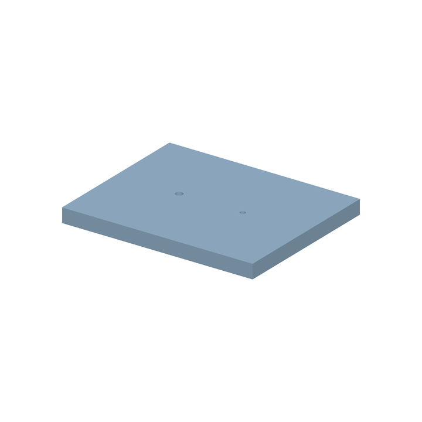
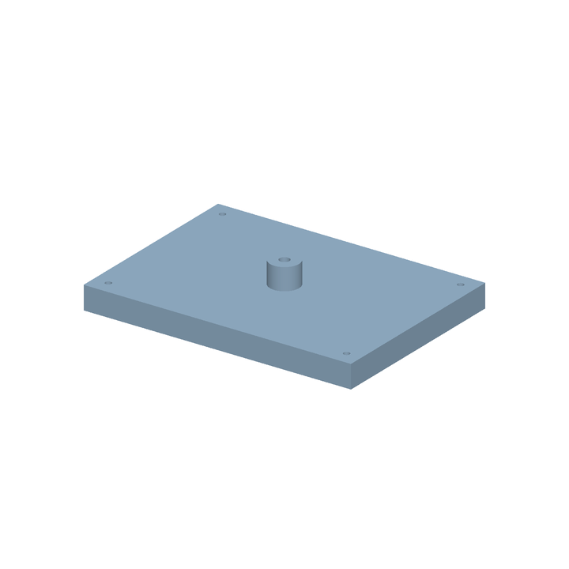
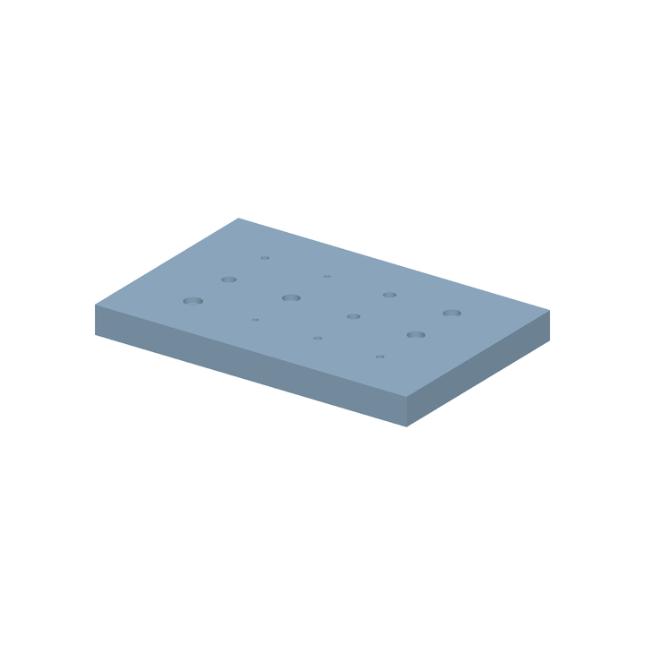
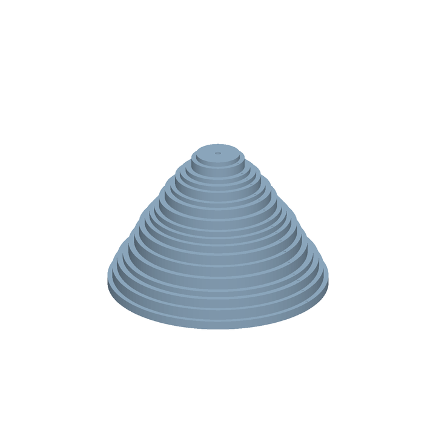
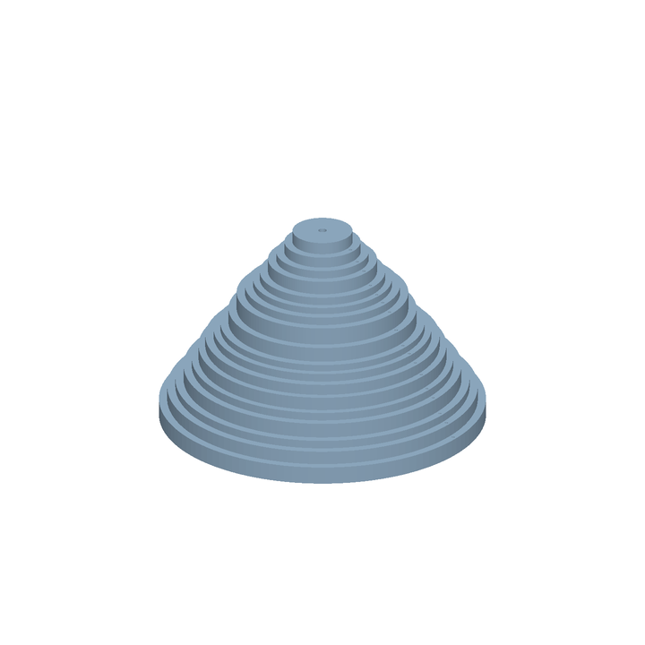

This compares untouched Qwen3.5-4B with a checkpoint that had several stages of CAD training. The difference measures that training history as a whole; it does not isolate the last SFT run.
Results on the drawing benchmark
The benchmark has 90 validation tasks: 30 easy, 30 medium and 30 hard. Each task has ISO and GOST drawing representations. We report the two representations separately on the same task set. Each attempt starts with an empty document.
Tasks solved out of the same task set, by drawing representation| Level | ISO · original | ISO · CAD-tuned | GOST · original | GOST · CAD-tuned |
|---|
| Easy | 0/30 | 30/30 | 0/30 | 25/30 |
|---|
| Medium | 0/30 | 14/30 | 0/30 | 16/30 |
|---|
| Hard | 0/30 | 3/30 | 0/30 | 6/30 |
|---|
| Total | 0/90 | 47/90 | 0/90 | 47/90 |
|---|
ISO: 47/90 tasks solved. GOST: 47/90. The original model scored 0/90 on each representation under the same protocol. These are development-validation results, not final TEST scores.
Looking at the 90 tasks as pairs: 40 were solved in both representations, 7 only in ISO, 7 only in GOST, and 36 in neither. Equal totals therefore do not mean that exactly the same tasks were solved.
Joint training on the two representations
The final SFT stage mixed ISO and GOST examples in one training set. For each selected next-action decision, we used the same parent geometry, CAD state and teacher action in both drawing profiles; only the goal images changed. The 1,000 rows comprise 500 ISO and 500 GOST examples from 267 TRAIN parent parts. One row supervises one action, not a complete build. Training started from our earlier CAD-tuned checkpoint.
LoRA rank 16, BF16, learning rate 1e−5, one epoch and 250 optimizer updates. The effective batch was four examples. Adapters covered the language model and selected vision blocks/merger, with about 15.4 million trainable parameters. This was LoRA, not 4-bit QLoRA. Training used one RTX 3090 with 24 GB of memory.
A separate matched test isolates that last stage against its CAD-tuned parent: on 20 held-out parts in both profiles, success changed from 0/20 to 3/20 for ISO and from 0/20 to 6/20 for GOST. This is a different test set from the 90-design benchmark above.
How an episode works
The model receives goal-drawing crops and the current CAD state as JSON. It returns one typed action, FreeCAD executes it, and the model receives the new state or an error. The goal drawings stay the same. This evaluation does not feed a rendered image of the current candidate back to the model.
The evaluated v1 API has seven actions: create a body, sketch a rectangle, sketch circles, pad, pocket, edit a parameter and finish. The newer v2 operations and composed-part dataset are separate work and are not included in these scores.
A pass requires the agent to finish, a valid single solid, matching native geometry, analytic volume/bounds checks and editable constrained sketches. A visually similar part or a high average geometry score is insufficient. The action budget is capped at 128.
Examples at each difficulty level
Two successful designs from each level are shown below. Easy and medium examples include plates and fixtures; the hard section contains two flange variants. These examples illustrate the results and do not replace the full benchmark counts.
Each card pairs the saved model output with the exact ordered drawing crops sent to the model. Switch ISO/GOST to compare representations of the same task, then select a crop. The status refers to that specific input.
Easy · ISO 30/30 · GOST 25/30
A plate with holes and a fixture with raised supports. These examples took 10 and 16 actions.

Plate with holes · 10 actions
Result shown: ISO
x-0d99715c5bb4e7039e745ee8

Support fixture · 16 actions
Result shown: ISO
x-16e3fd3d720d4ffb16ff3728
Medium · ISO 14/30 · GOST 16/30
A plate with a larger feature schedule and a fixture with several supports and cuts. The successful examples shown took 40 and 35 actions.

Plate with holes · 40 actions
Result shown: GOST
x-ee0fbe0be984d94b21b619c9
Support fixture · 35 actions
Result shown: GOST
x-250053dc6005026d46d7c6e5
Hard · ISO 3/30 · GOST 6/30
Two terraced flange examples: 18 levels, 35 holes and 108 actions each. ISO has 3/30 hard tasks solved and GOST 6/30, covering six distinct designs of this family. There were no hard successes in the other two families. These flanges have no counterbores.

Terraced flange · 108 actions
Result shown: ISO
x-04bb1dc9870669c49ff75a0a

Terraced flange · 108 actions
Result shown: GOST
x-2052e2d56293bd1826fddc03
Open the parts in FreeCAD
Open an individual .FCStd file in FreeCAD with File → Open, then choose an axonometric view and Fit all. Expand Body to inspect sketches, pads and pockets. The links in each card distinguish tuned outputs from original-model attempts.
Outputs from the original model are saved too. The links marked Original model contain its actual incomplete attempts on these same parts. Some have a partial solid; others contain only a body or sketch. A failed task is still saved as a FreeCAD document.
We checked the saved solutions again
We replayed the saved programs of both models for every task and representation in fresh FreeCAD processes. A separate verifier opened the saved candidate, replayed candidate, oracle and drawing model. We also checked logged actions, image and prompt hashes, finish events and the reported counts. The audit confirmed 0/90 for the original model and 47/90 for the tuned model separately for ISO and GOST.
Every successful output in each representation had zero symmetric-difference volume against its reference. One easy solution repeated a counterbore cut without changing the final geometry; action efficiency is not a separate pass criterion.
What these results leave open
The checkpoint handles simple construction much better, but hard success is concentrated in one repetitive family. We need broader composed-part validation, examples that teach missing-feature recovery, and image ablations to measure how much the policy relies on the drawing. Generated references and successful native replay alone do not establish model skill.
The ISO/GOST inputs use experimental drafting profiles. Full standards conformance has not been established. This report concerns geometric reconstruction in our bounded tool API.